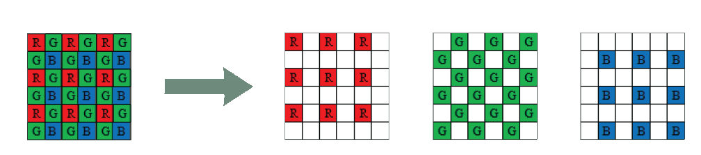
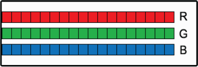

Complete Interlibrary Loan Scaning
and Image Treatment WorkFlow System
...better image quality, fewer errors, and easier operationIn the early days of digital interlibrary loan and digital document delivery, the available software was simple‘ and image quality expectations of requestors were low. ‘Fmes have changed. The demand for faster workflow delivery and perfect, printer-ready images has made the current software environment complex, creating significant challenges in training new employees. BSCAN ILL simplifies existing processes and produces perfect, printer-ready images.
BSCAN ILL starts by eliminating the need to manually enter requestor information. BSCAN ILL automatically reads the information that is required by interlibrary loan document delivery software from scanned pull slips, not only saving time but also eliminating human error.

Articles are scanned using one of a family of high speed faoe-up scanners: Click Mini, Click, and Bookeye 4 V3, V2 & V1. By eliminating the constant book flipping required by flatbed scanners, these face-up scanners are three to five times faster than the fastest face-down scanners, and they do not cause book spine damage. For low volume ILL operations, BSCAN ILL also runs BookEdge flatbed scanners, employing their book edge feature and a faster mode that scans two pages at a time.
Once articles are scanned, BSCAN ILL’s powerful image treatment capabilities automatically eliminate skew and remove unwanted black borders, fan and gutter.
Finally, BSCAN ILL automatically sends requests through lLLiad/Odyssey, Ariel, RAPID, Clio, Article Exchange, Relais, FTP, and e-mail and can notifiy lLLiad/Odyssey in each case, all without any need for further human intervention. Resending articles is also a snap.
- If you could
- ...add Digital Document Delivery services for as little as $2,000 per year. would you?
- ...cut your ILL scanning time in half for less than $2,000 per year, and in half again for $500 more, would you ?
- ...simplify your digitization process, reduce worker training time, produce clean, straight print-ready images every time for $2.000 per year, would you?
...would you?

BSCAN ILL
Dramatically Improves ILL Digitization
A fundamental tenet that has always bound the academic research community together is open sharing of newfound knowledge. Today, this open sharing is going on at a feverish pace and digital interlibrary loan services are an essential vehicle. Scholars from all fields are becoming increasingly dependent on their ability to acquire journal articles in just one day.
In the early 1990s, the pioneers of interlibrary loan digitization had no choice but to adapt commercial scanning equipment to meet their needs. Ariel was the only available document delivery software and there were no scanners made specifically for scanning books, journals and maps. Over time, that changed. Planetary scanners became available in the late 1990s. The first release of BSCAN ILL automatically read (using OCR) the requestor information from pull slips without manual keying, supported rapid scanning and image cleanup, and automatically posted to Ariel with the press of a single button. Since then, lLLiad, Odyssey, Ariel, RAPID, Clio and Article Exchange have been integrated into BSCAN ILL with the same hands-off automation. BSCAN ILL has a host of valuable features, many of which are not available with any other system.
In addition to allowing review of electronic articles and resource sharing to reduce per article scanning costs (e.g. for archival. electronic course materials creation, BSCAN ILL offers you:
- One easy user interface, integrated seamlessly with Article Exchange, lLLiad/Odyssey, RAPID, Relais, Ariel, Clio, FTP & Email - reduces training time significantly
- Optimized for the latest technology in face-up scanners, including all Bookeye models, Click, Click Mini, and face-down scanners such as BookEdge and WideTEK 25
- Automatically reading of requestor information from pull slips
- Automatically sending without intervention by the scan operator
- Central management with central, portable and remote scanning
- Automatic hold of all scanned articles for up to 30 days for fast correcting and easy resending
- Automatic updating of lLLiadI0dyssey, even if the request was delivered by another means such as Ariel, Relais, Clio, FTP or email
- Automatic image cleanup and output of ‘printer-ready’ images
Out with the Old and In with the New
Traditional Face-Up Capture
[a seven-step procedure]
Bookeye 4 V3

Modern Face-Up Capture

The sequence above shows just how much work is required to use a face-down scanner to scan multiple pages.
In contrast, the sequence on the left shows the relative speed and ease of face-up scanning systems that do not require the user to flip over the book being scanned. Once placing the book, the user simply turns pages and presses the scan button (or foot pedal) to scan two pages at a time.
Capturing Content
Deep into the Book Foldt
Bound journals often have content deep into the book fold. It is quite difficult and sometimes impossible to capture this content with a typical flatbed scanner or photocopier.
There are three methods for effectively capturing this content:
- Scanning in the direction of the curve and reducing the scanning speed at the book fold — Bookeye 4 V3, V2, 8. V1 scanner models
- Capturing the left and right pages with two separate cameras positioned at ideal angles — Click scanner
- Using a flatbed scanner with a book-edge feature — BookEdge scanner

Bookeye 4 scanners employ the first method, which requires high resolution optics. Bookeye 4’s left-to-right scanning allows it to follow the contours of virtually any book. allowing it to capture deep into the book fold and decompress the compressed con- tent. This feature combined with its advanced lighting system and superior optics also allows the Bookeye 4 to produce better quality 600 dpi images than any other book scanner available.
The second method is employed by Click scanners, which have two cameras. Both the Bookeye 4 and the Click are face-up scanners, which are faster and easier to use than face-down scanners, while our BookEdge has the lowest initial cost.
Bookeye 4 and Click scanners both have laser curve sensor sys- tems that allows them to easily straighten out the worst curves and produce clear, professional quality images.
Scanning in the direction of the book curve and reducing the scan speed at the book fold for capturing content deep into the book fold.
Two white LED light bars sweep across the material, providing excellent illumination.
 BSCAN ILL Bookeye 4 Station with optional display monitoron neck.
BSCAN ILL Bookeye 4 Station with optional display monitoron neck.
BSCAN ILL with Click captures the left and right pages with two separate cameras positioned at ideal angles.
An array of 420 individually aimed white LED lights produce bright, evenly distributed illumination from above and behind the scan bed, thus avoiding reflection.
 BSCAN ILL Click Station
BSCAN ILL Click Station

BSCAN ILL uses a flatbed scanner with a book-edge feature

When used in its native mode, the BookEdge scanner employs the third method to capture content deep into the book fold without damaging the spine. A laser curve sensor is not necessary.
To achieve increased speed and throughput, two pages at a time can be scanned, and BSCAN ILL will split the pages in two, eliminate book curve and skew, and remove fan and gutter.
BSCAN ILL Capture Workflow
Improves Quality & Performance, Reduces Errors and Simplifies

BSCAN ILL automatically captures data directly from pull slips — less keying means fewer keying errors.
BSCAN ILL reads the requestor’s name, the delivery method, and IP address from the pull slip and uses this information to automatically the appropriate document delivery software. After the article is sent, BSCAN ILL updates your document delivery software automatically. No extra keystrokes are necessary.
 Scan Article
Scan Article
Scan two pages at a time, using the keyboard to delete unwanted pages. An optional foot pedal is available for even faster scanning. Once scanned, the article is passed to tht automatic image treatment stage.

Choose from these Scanners
and Get Special Bundle Pricing

Bookeye 4 V1
25 x 33.5”

Bookeye 4 V2
18 x 24.4”
-
Bookeye 4 V3
15.3 x 18.9”

Click
22 x 16”

Click Mini
12.3 x 19.2”

Book Edge
11.8 x 17”

Wide TEK25-600
18.5 x 25”

BSCAN ILL automatically locates the content on each page, clips the content, creates a preset margin for consistency, and deskews and corrects curvature when neces- sary. When completed, the treated article images are passed on to the manual review stage.
Manual Review & CorrectionThis stage can be run after each article is scanned, or for greater efficiency, several articles can be scanned in sequence, automatically treated, queued up in this stage and reviewed at one time.
Each article is automatically sent via the delivery method specified. If an ILL depart- ment is using |LLiad and Odyssey to track completion and perform billing-related operations, BSCAN ILL can be configured to notify Odyssey that the article was sent even if it wasn't sent by Odyssey.


BSCAN ILL is capable of storing articles for a configurable number of days after they're sent. If an article must be resent, it can be opened and sent right away or be edited first, for example by adding or deleting pages.
 BSCAN ILL automatically locates the content and sets consistent margins, removes fan, gutter and
black edges - and even deskews the image.
BSCAN ILL automatically locates the content and sets consistent margins, removes fan, gutter and
black edges - and even deskews the image.
 Avoid the poor results that photocopiers too often produce
Avoid the poor results that photocopiers too often produce
Great Image Quality and Great Efficiency
Journal Anicle Requestors Want Perfect ‘Print-ready’ Images
ILL Departments Often Don ’t Have the Time BSCAN ILL Satisfies Everyone


Face up scanners minimize book jockeying. Fast face-up scanners like those offered by DLSG with BSCAN lLL are 3-5 times faster than the fastest face-down scanners and photo- copiers. And unlike face-down scanners and copiers, DLSG scanners are designed to capture deep into the book fold, flatten book curve, split images into two pages and remove fan and gutter.
BookEdge is uniquely designed for scanning books and is the fastest face-down scanner in its price range. When used in book mode (one page at a time), this scanner flattens the page and captures deep into the fold of tightly bound journals. vwm BSCAN ILL, the BookEdge can also be used to scan 2 pages at a time, which is substantially faster than book mode. BSCAN ILL splits & flattens the pages, and eliminates fan, gutter & skew.
Older technologies like photocopiers and face-down scanners are concomitant with limitations that typically include:
- Difflculty Capturing Content in the Book Fold
- Significant Stress to Book Spines
- Limit to 11x17 inch Scan Area
- Black & White Paper Copies instead of Full-Color, Digital Copies
- Unsightly Skew, Fan, Gutter, & Black Borders
- Significantly Higher Cost of Operation
Resource Sharing
Share with Archivist & Digital Course Materials Creation
The exceptional image quality produced by Bookeye and WideTEK scanners affords opportunities for resource shar- ing with Archivists as well as use for projects and creating digital course materials. Reduce your cost per article scanned by sharing equipment costs and helping other departments to switch to digital format and get color content without the additional cost of color copiers or color microfilming.
 Use some digitization projects funding
to purchase the Bookeye
4 V1, V2 or V3 and dramatically
reduce lLL's share of the cost
of state-of-the-art scanning
equipment. A complementary schedule
is usually easy to agree upon. Note that while the
Bookeye 4 V2's standard image quality (high quality
400dpi) meets and exceeds digitization standards, a
600dpi option can be purchased later, if desired.
Use some digitization projects funding
to purchase the Bookeye
4 V1, V2 or V3 and dramatically
reduce lLL's share of the cost
of state-of-the-art scanning
equipment. A complementary schedule
is usually easy to agree upon. Note that while the
Bookeye 4 V2's standard image quality (high quality
400dpi) meets and exceeds digitization standards, a
600dpi option can be purchased later, if desired.
BSCAN ILL automatically locates the content and sets consistent margins, removes fan, gutter and
black edges - and even deskews the image.
Avoid the poor results that photocopiers too often produce
The Amazing Image Quality of the Bookeye 4 V2 600dpi Option
With its 600dpi option. Bookeye 4 V2 produces the highest quality A2 size (17x25") images of any face-up scanner todayTo capture moving objects, digital cameras must use array CCDs, which capture all parts of the object at the same instant. Afford- able digital cameras have 50 megapixels or less. And those pixels must be further divided into red, green and blue sub-pixels, which can reduce the clarity of color images by 40%.
 The Bayer Pattern is used by digital cameras to capture color imagesSince books don't move while being scanned, Bookeyes employ linear CCD technology to produce ultra-clear images with astounding 140 megapixels. Each pixel in a linear CCD includes full red, green and blue sub-pixels.
 Scanners use linear CCDs. The sweeping action of scanners allow them to E, capture the precise amount of red, blue and green for each pixel.Bookeye 4 scanners utilize a unique state-of-the-art rotating mirror system that dramatically reduces clarity loss at the corners of the image due to the limitations of lens systems. Bookeyes can also scan in V-mode or flat-mode, and they scan from left to right, allowing them to follow the curves of the book.
Resize ILL Operations with No Penalty
DLSG's exclusive trade-up, interchange and re-purpose programs are among the best reasons to choose DLSG for your institution's digitization needs

The KIC Product Family
Your dollars go further with our complete KIC product line. Every institution would like to have at least one large KIC system. especially for reading rooms and reference sections, but not all library floor locations require a large system. Our array of products lets you get as many bigger systems as you need and fill out the rest with lower-cost systems.Bookeye 4 V2
 Floorstand Model
Floorstand Model

Bookeye 4 V3
 Floorstand Model
Floorstand Model
Click
 Floorstand Model
Floorstand Model

Click Mini
 Floorstand Model
Floorstand Model

BookEdge
 Floorstand Model
Floorstand Model

| Max Scan Area | 24.4 x 18"  |
18.9 x 18"  |
22 x 16"  |
19.2 x 12.3"  |
17 x 11.8"  |
|---|---|---|---|---|---|
| Bound Volume Scanning Speed in Pages Per Minute | 24 PPM 
|
30 PPM  |
20 PPM 
|
40 PPM  |
7 PPM 
|
| Resourse Sharing: Archive | - |
- |
|||
| Project & Course Material Creation | |||||
| Price | $ |
$ |
$ |
$ |
$ |
| Scalable | |||||
| Oversize Flat & Large Books | |||||
| Face-up Scanning | |||||
| Flatbed with Book Edge | |||||
| 120° Book Cradle | |||||
| Scan Follows Book Contours | |||||
| Face-up: Flat and V-Cradle |
|
||||
| 400 dpi Output | |||||
| 600 dpi Output |
|
Features Common to All KIC System
| Output Formats: | Basic PDF, JPEG, PNG, MP3 Audio(TTS), Google Docs, Cloud, Dropbox,..., USB, Email, FTP,Admin Folder, Smart Dock™,Tablets, eReaders and Smart Phones. |
| Copier Replacement Capabilities: | Collate, Black&White Color, Automatic Document Feeder Option, Multiple Shared Printers, Charge for Prints via Blackboard, ITC Sys, CBord, Diebold, Copicard, Danyl Sys, Debitek, Gen Meters, Jamex, Pharos, Vendapin, Virtual Cash, etc. |
| User Interface Features: | True2Touch™, Separate Preview Screen, Full-Size Preview, Large Touch Screen (24 inches), ADA Support. |
| Image Processing Abilities: | Collate, Clip, Rotate, Crop, Split Left & Right Pages, Deskew, Correct Book Curve. |
| Optics: | 24 Bit Color, 300 dpi Output. |
Dramatically Improves ILL Digitization
BSCAN ILL supports scanners made specifically for library digitization, improves image quality, reduces keying and keying errors and fully integrates with Article Exchange, Ariel, ILLiad/Odyssey, RAPID, Article Exchange, Clio, FTP & email.In the early 1990s, the pioneers of interlibrary loan digitization had no choice but to adapt commercial scanning equipment to meet their needs. Ariel was the only available document delivery software and there were no scanners made specifically for scanning books, journals and maps. Over time, that changed. Planetary scanners became available in the late 1990s. The first release of BSCAN ILL automatically read (using OCR) the requestor information from pull slips without manual keying, supported rapid scanning and image cleanup, and automatically posted to Ariel with the press of a single button. Since then, |LLiad, Odyssey, Ariel, RAPID, Clio and Article Exchange have been integrated into BSCAN ILL with the same hands-off automation. Today, BSCAN ILL has a host of valuable features, many of which are not available with any other system.
BSCAN ILL Product Features
- Allows for export of original uncompressed images
- Supports RAPID and Clio - a BSCAN ILL exclusive
- Allows for review and rescan of images prior to delivery
- Controls nearly all scanners used for interlibrary loan and document delivery
- Automatically selects the desired document delivery method - a BSCAN ILL exclusive
- Automatically reads requestor information from pull slips -a BSCAN ILL exclusive
- Automatically sends the document without intervention by a scan operator - a BSCAN ILL exclusive
- Provides a single, simple document delivery interface for ILL scanning staff - a BSCAN ILL exclusive
- Connect main libraries with smaller libraries
- Captures original “raw” (uncompressed) images and saves them to a database on the scanner workstation
- Automatically archives documents for fast and easy retrieval if a document must be resent - a BSCAN ILL exclusive
- Automatically updates |LLiad/Odyssey, even if the re- quest is delivered by Ariel, FTP or e-mail - a BSCAN ILL exclusive
- Automatically produces ‘printer-ready’ images (deskews, removes fan, gutter, book curve, etc.) - a BSCAN ILL exclusive
- Supports Resource Sharing to reduce ILL department cost-share
- Scale equipment capacity up or down without penalty
Face-Down Capture
[a seven-step procedure]
Bookeye 4 V3
Face-Up Capture
The sequence above shows just how much work is required to use a face-down scanner to scan multiple pages.
In contrast, the sequence on the left shows the relative speed and ease of face-up scanning systems that do not require the user to flip over the book being scanned. Once placing the book, the user simply turns pages and presses the scan button (or foot pedal) to scan two pages at a time.